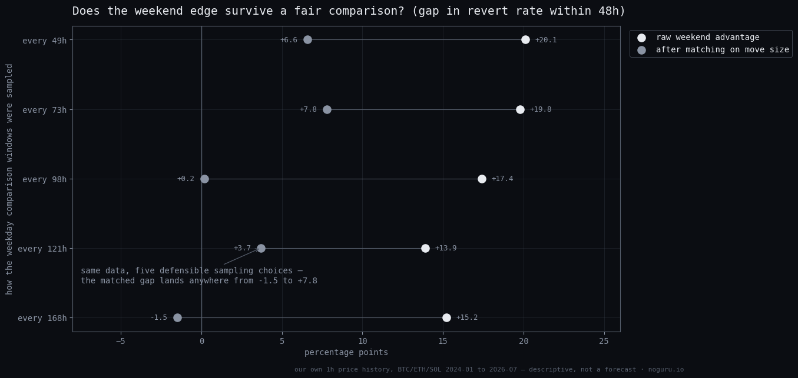

Trading Academy · Module 3 — Market fundamentals · Lesson 6/6 · Lesson 14 of 22 in the curriculum · ~12 min read
Weekend drift: what happens when the market reopens
Crypto never closes, but the people trading it mostly do. Weekend books are thin, weekend moves are small, and most of them come back. That last part gets sold as an edge. It isn't — and seeing why is worth more than the fact itself.
Find something on this page
Read this lesson in context
This is the original free lesson. Its hypothetical examples teach general trading concepts. References to futures, stops, other strategies or older track-record formats are not statements of NoGuru’s current spot configuration.
Public reading
Through Saturday and Sunday the order books thin out. Fewer participants, smaller size resting at each price, and the same order pushes further than it would on a Wednesday. The result is not chaos — it is the opposite. Measured over our own hourly price history for BTC, ETH and SOL since January 2024, the typical weekend move is less than half the size of an ordinary two-day move during the week.
| Coin | Typical weekend move | Typical weekday 49h move |
|---|---|---|
| BTC | 0.88% | 2.45% |
| ETH | 1.37% | 3.19% |
| SOL | 2.34% | 3.95% |
There used to be a second thing worth watching. CME — a regulated US futures exchange — closed over the weekend while crypto kept trading, so Monday reopened at whatever price spot had wandered to. The difference was the famous "CME gap". That mechanism ended on 29 May 2026, when CME moved to near-continuous crypto trading. No closure, no gap. Any weekend gap you see quoted now formed before that date.

Here is the trap. Weekend moves do return to their starting price more often than weekday moves do — 65% within two days against 45%. That looks decisive until you ask the question that should follow every statistic like it: compared to what? Smaller moves come back more often for reasons that have nothing to do with the calendar; there is simply less distance to travel. Match weekend moves against weekday moves of the same size and almost all of that gap disappears. What little is left then depends on an arbitrary choice about how you pick the comparison windows — change it and the leftover swings from mildly positive to mildly negative.
The full lesson works through the whole comparison: how the measurement is built, why "it filled eventually" is very nearly always true given enough time, what the reopen actually looks like hour by hour, how we tested our own answer and watched it fall apart, and what happened when we tried trading this directly. It closes with the transferable part — a short method for taking any claim of this shape and finding out what it is really telling you.
← Liquidation cascades: how crypto really moves Timeframes: one market, many stories →
Original source risk note
Trading cryptocurrencies involves substantial risk of loss and is not suitable for every investor. The academy teaches method and arithmetic — it does not and cannot promise trading results. Nothing here is investment advice.